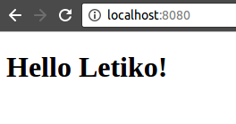

<!DOCTYPE html>
<html lang="en">
    <head>
        <meta http-equiv="Content-Type" content="text/html; charset=UTF-8">
		<meta name="viewport" content="width=device-width, minimum-scale=1.0, maximum-scale=1.0">
		<link rel="stylesheet" type="text/css" href="../css/blog.css">
		<title>Разворачиваем тестовую среду используя Vagrant</title>
				<!-- Yandex.Metrika counter -->
		<script type="text/javascript">
		(function (d, w, c) {
		    (w[c] = w[c] || []).push(function() {
			try {
			    w.yaCounter38288850 = new Ya.Metrika({
				id:38288850,
				clickmap:true,
				trackLinks:true,
				accurateTrackBounce:true
			    });
			} catch(e) { }
		    });

		    var n = d.getElementsByTagName("script")[0],
			s = d.createElement("script"),
			f = function () { n.parentNode.insertBefore(s, n); };
		    s.type = "text/javascript";
		    s.async = true;
		    s.src = "https://mc.yandex.ru/metrika/watch.js";

		    if (w.opera == "[object Opera]") {
			d.addEventListener("DOMContentLoaded", f, false);
		    } else { f(); }
		})(document, window, "yandex_metrika_callbacks");
		</script>
		<noscript><div></div></noscript>
		<!-- /Yandex.Metrika counter -->
	</head>
	
	<body>
		<div class="page">
			<div class="container">
				<div class="header">
					<a href="http://letiko.com/blog/index.html" class="header-element">
						Home
					</a>
				</div>
                <div class="published">22 декабря 2016</div>
                <h1>Разворачиваем тестовую среду используя Vagrant</h1>
                <hr>
               
                <p>Сегодня мы рассмотрим <a href="https://www.vagrantup.com/">Vagrant</a> — инструмент, способный быстро развернуть тестовую среду для наших приложений.</p>
                
                <b>Основные этапы:</b><br>
                <ul>
                    <li>Скачать необходимые инструменты</li>
                    <li>Запустить среду</li>
                    <li>Развернуть наше приложение</li>
                    <li>Автоматизировать процесс</li>
                </ul>
                

                <p>Для того, чтобы начать работать с Vagrant'ом, необходимо скачать и установить VirtualBox. Найти его можно <a href="https://www.virtualbox.org/wiki/Downloads">здесь</a>.</p>
                
                <p>Ставим Vagrant следующей командой:</p>
                <pre>$ apt-get install vagrant</pre>
                
                <p>И <a href="https://docs.docker.com/engine/getstarted/">Docker</a>, инструмент, который мы будем использовать для создания образа нашего приложения:</p>
                <pre>$ apt-get install docker</pre>
               
                <p>Теперь нам нужно скачать '<a href="https://www.vagrantup.com/docs/boxes.html">коробку</a>', то есть саму среду. Мы будем использовать <a href="https://www.centos.org/">CentOS 7</a>:</p>
                <pre>$ vagrant box add centos/7</pre>
                
                <p>Создаём папку, внутри неё запускаем терминал и выполняем:</p>
                <pre>$ vagrant init</pre>
                <p>Команда сгенерирует для нас Vagrant файл, в котором нужно поменять значение поля '<i>config.vm.box</i>' на <i>"centos/7" и добавить поле 'config.vm.network "forwarded_port", guest: 8080, host: 8080'</i>, что позволит нам получить доступ к приложению снаружи среды.</p>
                
                <p>Теперь мы можем запускать Vagrant, но сначала подготовим наше приложение. Возьмём готовый проект, который мы использовали в туториале про <a href="http://letiko.com/blog/minikube.html">Minikube</a>. В папке с файлом 'Vagrant' выполняем:</p>
                <pre>$ git clone https://github.com/dimonik/spring_hello_app.git<br>$ cd spring_hello_app<br>$ mvn package</pre>
                
                <p>Переходим в директорию '<i>/spring_hello_app/target</i>' и создаём файл с названием <i>'Dockerfile'</i>, который должен содержать в себе следующее:</p>
                <pre>FROM java:8<br>MAINTAINER Letiko <hello@letiko.com><br>ADD tutorial-0.0.1-SNAPSHOT.jar tutorial.jar<br>EXPOSE 8080<br>ENTRYPOINT ["java","-jar","tutorial.jar"]</pre>
                
                <p>Дальше нам нужно запустить нашу виртуальную машину. В директории с файлом 'Vagrant':</p>
                <pre>$ vagrant up</pre>
                <p>На это может уйти несколько минут. Далее, входим в консоль машины:</p>
                <pre>$ vagrant ssh</pre>
                
                <p>В CentOS 7 нам нужно установить Docker и дать пользователю права на его использование. Для этого выполняем следующие команды:</p>
                <pre>$ yum install docker<br>$ groupadd docker<br>$ usermod -aG docker $(whoami)<br>$ service docker restart</pre>
                
                <p>Создаём образ приложения и запускаем его в контейнере:</p>
                <pre>$ cd /vagrant/spring_hello_app/target<br>$ docker build -t simple-server .<br><br>$ docker run --privileged --name simple-server_CONT -p 8080:8080 -d simple-server</pre>
                
                <p>Где <i>-t</i> — название образа приложения,<br><i>--name</i> — название контейнера,<br><i>-d</i> — флаг, запускающий приложение в фоновом режиме. В конце пишем имя запускаемого образа.</p>
                <p>Если наша система состоит из нескольких приложений, которые должны общаться между собой, то в команду запуска контейнера добавялем '--link <i>название_контейнера</i>', к которому обращаемся.</p>
                
                <!-- ТУТ НАДО ДОПИСАТЬ -->
                <p>Теперь можем проверить наше приложение. Переходим по адресу <a href="http://localhost:8080">localhost:8080</a> и видим:</p>
                
                
                <p>Если мы будем каждый раз всё это делать вручную, то у нас будет уходить уйма времени. Постараемся упростить этот процесс для дальнейших запусков. В папке с файлом Vagrant создаём следующие скрипты:</p>
                
                <p><i>init.sh</i>:</p>
                <pre>git clone https://github.com/dimonik/spring_hello_app.git<br>cd spring_hello_app<br>mvn package<br><br>cd target<br><br>cat&lt;&lt;EOF&gt;./Dockerfile<br>FROM java:8<br>MAINTAINER Letiko<br>ADD tutorial-0.0.1-SNAPSHOT.jar tutorial.jar<br>EXPOSE 8080<br>ENTRYPOINT<br>["java","-jar","tutorial.jar"]<br>EOF<br><br>cd ..<br>cd ..<br><br>vagrant up</pre>
                
                <p>Предыдущему файлу даём возможность выполнения.<br><i>bootstrap.sh</i>:</p>
                <pre>sudo yum install docker<br>sudo groupadd docker<br>sudo usermod -aG docker $(whoami)<br>sudo service docker restart<br><br>cd /vagrant/spring_hello_app/target<br>sudo docker build -t simple-server .<br><br>sudo docker rm simple-server_CONT<br>sudo docker run --privileged --name simple-server_CONT -p 8080:8080 -d simple-server</pre>
   
                <p>Файл <i>Vagrant</i> должен выглядеть так:</p>
                <pre>Vagrant.configure(2) do |config|<br>config.vm.box = "centos/7"<br>config.vm.network "forwarded_port", guest: 8080, host: 8080<br>config.vm.provision "shell", path: "bootstrap.sh", <br>run: "always"<br>end</pre>
                
                <p>Готово! Теперь нам нужно лишь запустить <i>init.sh</i>, и всё, что мы делали вручную, теперь выполнится автоматически.</p>
                
                <br><br><br>
                ССЫЛКИ:<br>
                <ol>
                    <li>Основы <a href="https://www.vagrantup.com/docs/getting-started/">Vagrant</a>;</li>
                    <li>Основы <a href="https://docs.docker.com/engine/getstarted/">Docker</a>.</li>
                    <li>Про <a href="https://www.centos.org/">CentOS</a>.</li>
                </ol>
                <br>
                <br>
                <br>

                <h3>Автор</h3>
                © Yevhenii<br>
                <br>
			</div>
		</div>
    </body>
</html>
